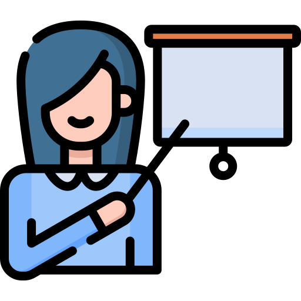
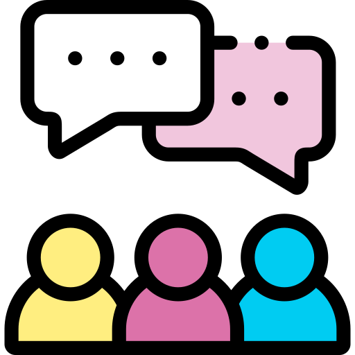

Aktywności
Czym się zajmujemy?
COllaboration & REsearch : Co kilka tygodni spotykamy się w gronie Członków Koła, aby wymienić się doświadczeniami – porozmawiać o najnowszych pracach naukowych i ciekawych projektach.
Meetupy: Każdego miesiąca organizujemy otwarty wykład – spotkanie z naukowcem lub pracownikiem firmy prezentującym swoją pracę.
Panele Dyskusyjne: Opowiadające o ciekawych zagadnieniach takich jak dla przykładu doktorat w machine learningu lub jak poprowadzić swoją karierę.
Study Group: Spotkania członków koła zainteresowanych rozwijaniem swojej wiedzy i umiejętności w zakresie ML/DL

- 
- 